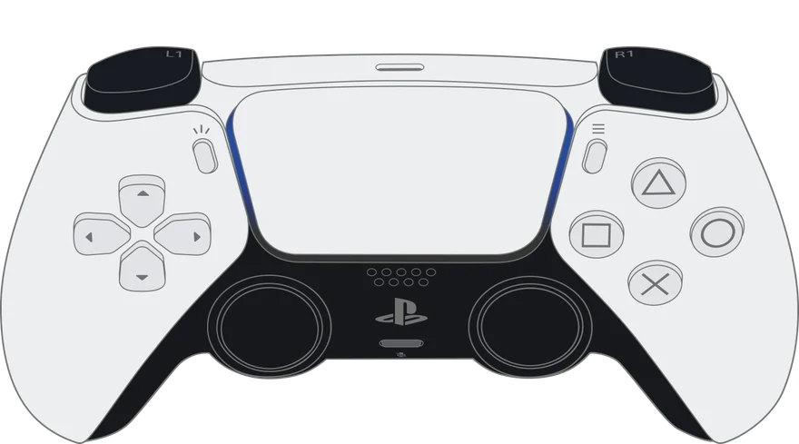

Test rapide sans WebHID
Ce navigateur permet seulement un test simple : boutons, sticks, gâchettes et vibration. Pour les infos usine, la batterie, la calibration et l'historique d'usage, utilisez Chrome ou Edge sur ordinateur.
Testeur de manette PS5 DualSense
Vérifiez une manette DualSense ou DualSense Edge en quelques minutes, directement dans le navigateur : dérive des sticks, gâchettes, boutons, batterie, capteurs, infos usine et historique d'usage, avec un rapport PDF à la fin.
- Branchez la manette en USB, ou appairez-la en Bluetooth.
- Cliquez sur « Connecter la manette » et choisissez « DualSense Wireless Controller ».
- Suivez le contrôle guidé, puis imprimez le rapport.
Fonctionne avec Google Chrome ou Microsoft Edge sur ordinateur. Rien à installer, aucune donnée envoyée.

Contrôle complet
22 tests guidés et un verdict clair : validée ou non validée.
Sticks
Dérive, bruit, circularité, retour au centre et zone morte conseillée.
Infos usine
Numéro de série, couleur, carte mère et détection des contrefaçons.
Historique d'usage
Heures d'utilisation, charges et appuis par bouton, enregistrés par la manette.
Calibration
Recalibrage du centre et de l'amplitude des sticks, réversible jusqu'à la sauvegarde.
Rapport PDF
Une page avec la manette dans sa couleur, prête à remettre à un client.
Questions fréquentes
Comment savoir si ma manette a de la dérive (drift) ?
Lancez le contrôle et laissez les sticks au repos : ZerPad mesure leur décalage et leur bruit. Jusqu'à 3,5 % le stick est bon, de 3,5 à 6 % une calibration est conseillée, au-delà c'est de la dérive. Un bruit supérieur à 1,5 % indique un potentiomètre usé.
La calibration est-elle définitive ?
Non, tant que vous ne cliquez pas sur « Sauvegarder définitivement », les nouvelles valeurs sont temporaires et l'ancienne calibration revient au redémarrage de la manette. Une fois sauvegardée, vous pouvez recalibrer à tout moment.
Peut-on reconnaître une fausse manette ?
ZerPad vérifie que la manette répond aux commandes internes de Sony et que ses infos usine sont cohérentes (numéro de série, carte mère, date du firmware). Une manette qui échoue à ces contrôles est très probablement une copie.
Pourquoi faut-il Chrome ou Edge ?
Le test complet utilise WebHID, que seuls Chrome et Edge sur ordinateur proposent. Sur Firefox, Safari et téléphone, un test rapide reste disponible : boutons, sticks, gâchettes, dérive et vibration.
Ça marche avec une manette Xbox ou Switch ?
Oui, pour le test rapide : boutons, sticks, gâchettes, dérive, circularité et vibration selon le navigateur. Les infos usine, la batterie, l'historique d'usage et la calibration sont réservés à la DualSense et à la DualSense Edge.
Mes données sont-elles envoyées quelque part ?
Non. Tout se passe dans votre navigateur : aucune mesure n'est envoyée sur internet. L'historique des contrôles reste sur cet ordinateur.
Manette
Identité de la manette
| Modèle | - |
|---|---|
| Nom USB/BT | - |
| VID : PID | - |
| Connexion | - |
| Adresse MAC | - |
| Version firmware | - |
| Version mise à jour | - |
| Version matérielle | - |
| Date de compilation FW | - |
| Type FW / série SW | - |
| Autres firmwares | - |
État en direct
| Batterie | - |
|---|---|
| Charge | - |
| Prise jack | - |
| Port USB-C | - |
| Fréquence des rapports | - |
| Mode de rapport | - |
| Horodatage capteurs | - |
Calibration usine (IMU)
| - |
Infos usine (lecture seule)
| Connectez une manette… |
Historique d'usage (compteurs enregistrés dans la manette)
Entrées
Boutons
Rebonds de boutons : aucun
Sticks
Gâchettes analogiques
Capteurs de mouvement
| Gyro X (°/s) | - |
|---|---|
| Gyro Y (°/s) | - |
| Gyro Z (°/s) | - |
| Accél X (g) | - |
| Accél Y (g) | - |
| Accél Z (g) | - |
| |Accél| (g) | - |
Pavé tactile
-
Sorties
Vibrations
Choisissez un réglage. La vibration s'arrête seule après 10 s, avec « Arrêter » ou en cliquant de nouveau sur le réglage.
Barre lumineuse & LED
Barre lumineuse
LED joueur
Luminosité LED joueur
LED micro
Gâchettes adaptatives
Choisissez la gâchette puis un effet, puis appuyez sur la gâchette pour le sentir.
Gâchette
Effet
Audio (USB uniquement)
Généré par la manette elle-même, sans réglage audio.
Contrôle
Verdict
Comparaison avant / après
Historique (ce navigateur)
Jeux
Trois petits jeux pour prendre en main la manette et vérifier les commandes en conditions réelles. Les records restent dans ce navigateur.
Réflexes
Un symbole s'affiche : appuyez sur le bouton correspondant le plus vite possible. La barre lumineuse passe au vert ou au rouge, la manette vibre à chaque erreur.
Cible
Suivez le cercle avec le stick. Score : part du temps passé dans la cible. Les LED joueur indiquent le temps écoulé.
Dosage
Maintenez la gâchette dans la zone verte malgré la résistance de la gâchette adaptative. Un exercice de précision sur toute la course.
Calibration
Recalibration des sticks
Corrige un centre décalé (dérive d'origine électrique) et une amplitude incomplète, comme le fait l'usine. Une calibration ne répare pas un stick physiquement usé ou sale : si la dérive revient, le module stick doit être nettoyé ou remplacé.
Conditions
- Connectez une manette…
Mesure du centre
| Aucune mesure. |
Étapes
Changements
Aucun changement en cours.
Données brutes
Dernier rapport d'entrée
-
Rapports de fonctionnalité (feature reports)
-